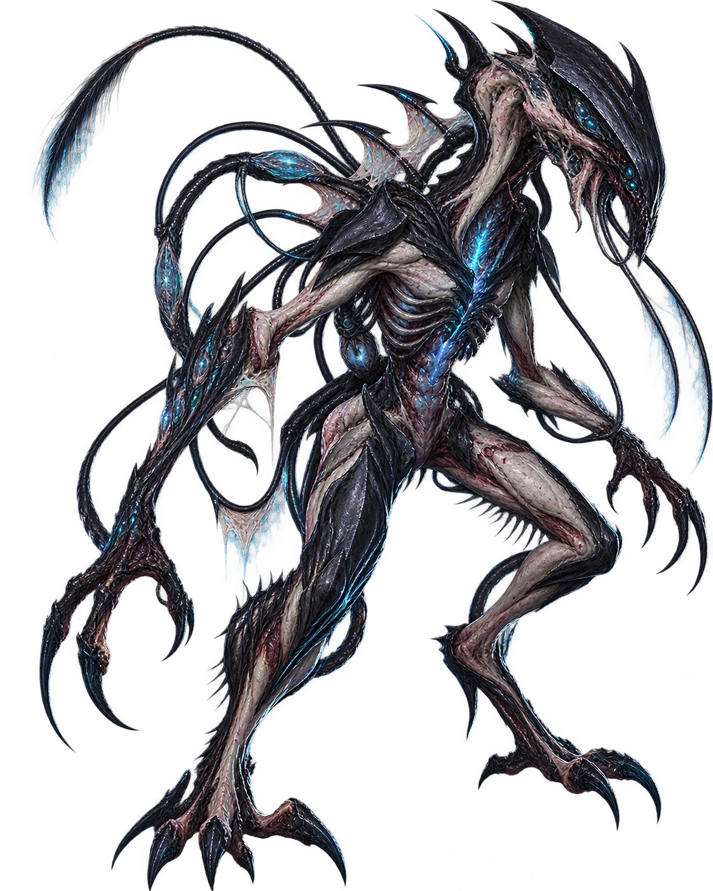

CAIR EM
UMA FRIA OPERAÇÃO H // A MISSÃO COMEÇA ANTES DA INVASÃO
A DCX recebeu autorização para recuperar um ativo mantido dentro de uma unidade da RAIN em território japonês. A autorização existe. A confiança, não.
“Cada ação terá que ser justificável depois.”
O objetivo não é vencer uma guerra contra a RAIN. É sair com o ativo sem criar outro escândalo nacional.
A DCX ESTÁ
SENDO OBSERVADA.
Depois de incidentes públicos recentes, o governo japonês exige uma operação precisa, controlada e documentável. Recuperar H-01 também é uma chance de provar que a DCX ainda merece autonomia.
Funcionários e visitantes entram primeiro na lista de proteção.
Sem cratera na RAIN.
Somente sob ameaça imediata à vida.
A missão foi autorizada. Um desastre diplomático, não.
NÃO ACORDE
O RUSSO.
Extração criogênica
A cápsula faz parte do objetivo. Se ele despertar, deixa de ser carga e vira evento de contenção.
COMO
ENTRAMOS?
ANTES DO GOLPE.
TRAPAÇA
O narrador atualiza este quadro em tempo real.
0%
Preparações concluídas.
N-02

0/5 fragmentos
SE H-01 ACORDAR,
O GOLPE ACABOU.
Prioridade muda.
Interromper escalada, evacuar civis, abrir distância, tentar comunicação/recontenção e assumir que usuários afetados podem ficar temporariamente sem energia.